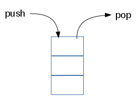
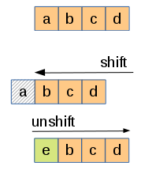

Remi Forax
“In computer science, an array data structure, or simply an array, is a data structure consisting of a collection of elements (values or variables), each identified by at least one array index or key.”
source: Wikipedia.com - Array
“En informatique, la structure de donnée tableau, ou simplement tableau, est une structure de donnée consistant en une collection d'élements (valeur ou variables), chacun identifié par au moins un index de tableau ou clé.”
source: Wikipedia.com - Tableau
Un tableau en Javascript se déclare entre [ et ].
Les élements sont séparés par des virgules.
Les tableaux sont hétérogènes, ils peuvent contenir des valeurs de types différents.
Les cases d'un tableau sont accessible par un index
Un accès hors des bornes (0, length -1) du tableau
renvoie undefined
La première case d'un tableau est à l'index 0
Les cases d'un tableau sont accessibles en lecture et écriture
Une boucle for de 0 à length - 1 permet de
parcourir tous les élements
Si on trouve le résultat, on peut arrêter la boucle
Ne jamais sortir d'une boucle en changeant un drapeau
indexOf() utilise == pour trouver la première occurence d'un élement et renvoie son index (ou -1)
lastIndexOf, même chose mais pour la dernière occurence
join(delimiteur) permet de créer une chaine de caractères avec tous les éléments séparés par un délimiteur
push() permet d'ajouter un élement à la fin d'un tableau
Il existe aussi une méthode pop qui retire le dernier élément permettant d'utiliser un tableau comme une pile

shift() décale les élements vers la gauche
(supprime le premier élement)
unshift décale les éléments sur la droite
(insére le premier élement)

ces deux méthodes ont un temps d'exécution qui dépend du nombre d'élements
slice(start, end) permet d'extraire la sous partie [start, end[ d'un tableau sous forme d'un nouveau tableau
contrairement aux méthodes précédentes, slice ne modifie pas le tableau sur lequel on appel la méthode mais renvoie un nouveau tableau
splice(start, deleteCount, elements) supprime deleteCount élement à l'index start et de les remplace par des elements
Attention à ne pas confondre slice et splice !
“In computer science, functional programming is a programming paradigm that treats computation as the evaluation of mathematical functions and avoids changing-state and mutable data (side effects).
source: Wikipedia.com - Functional Programming
“En informatique, la programmation fonctionnelle est un paradigme de programmation qui traite chaque calcul comme l'évaluation de fonctions mathématiques et évite les changements d'état et les données mutables (effets de bord).”
source: Wikipedia.com - Programmation Fonctionnel
La fonction sort() permet de trier un tableau sur place
Par défaut, les comparaisons se font
sur les chaines de caractères.
ce qui est pas forcément ce que l'on veut !
On utilise une fonction de comparaison pour paramétrer sort(fun) !
doit renvoyer une valeur négative si la première valeur est plus petite, 0 si les deux valeurs sont égales et une valeur positive sinon
JavaScript possède une notation
pour les fonctions anonymes
que l'on peut passer directement en argument
forEach(fun) applique la même fonction à chaque valeur
comme une boucle sans écrire la boucle !
map(fun) applique la même fonction à chaque valeur dans un nouveau tableau
filter(fun) permet d'obtenir un tableau de valeur respectant une propriété
some renvoie vrai dès qu'une propriété est vérifié
every demande à ce que la propriété soit vrai sur toutes les valeurs
reduce(fun, init) résume par une valeur en appliquant une fonction d'aggregation
Il est possible de combiner les opérations
par ex., compter le nombre de mot commençant par 'b'
Une fonction anonyme à accès aux variables de la fonction englobante
que l'on peut aussi écrire comme cela
Mettre une closure dans une boucle est interdit !
La même variable i est utilisé par toutes les closures
On utilise une fonction intermédiaire !
Chaque appel à pushToArray crée une nouvelle variable i
ou encore une closure en tant que fonction intermédiaire
La closure crée une nouvelle variable i